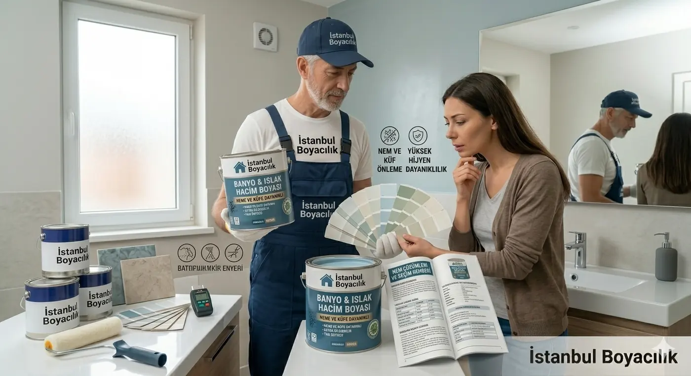

Banyo boyası seçimi, yoğuşma alanı ile doğrudan ıslanan alanın ayrılmasıyla başlar. Duş dışında kalan duvar/tavan için uygun iç cephe ürünü seçilebilir; duş kabini içi, sürekli su sıçraması veya su birikmesi olan yüzey için üreticinin açıkça izin verdiği tam kaplama sistemi gerekir. “Epoksi”, “silikonlu” veya “banyo boyası” adı tek başına bu izni vermez.
1. Banyonun hangi yüzeyi boyanacak?
| Alan | Karar |
|---|---|
| Yoğuşmaya maruz duvar / tavan | Nem kaynağı ve havalandırma değerlendirilir; kuru ve sağlam yüzey için uygun ürün/astar seçilir. |
| Duş içi / doğrudan su teması | Ürünün tam yüzey ve su maruziyetine izin vermesi gerekir. Genel iç cephe veya rastgele epoksi önerilmez. |
| Fayans / seramik | Duvar boyası uygunluğu yeterli değildir; mevcut kaplama için onaylı yapışma ve son kat sistemi gerekir. |
| Aktif sızıntı / kabaran sıva | Önce neden giderilir ve yüzey kurutulur. Boya veya astar sızıntının onarımı yerine geçmez. |
2. Doğrulanmış seri örneği: DYO DYONEM
DYO DYONEM ürün sayfası ürünü özellikle boya filminde yoğuşma oluşturan banyo ve mutfak gibi iç alanlar için tanımlar. Akrilik kopolimer esaslı, mat desenli bir üründür. Bu örnek, mat bitişin banyoda her koşulda uygunsuz olduğu genellemesini de desteklemez; uygunluğu parlaklık isminden önce ürünün kullanım amacı belirler.
DYONEM'in yeni yüzey tarifinde Dyobinder vardır ve izolasyon astarının kullanılmaması açıkça belirtilir. Dolayısıyla bütün banyolara “mutlaka nem bariyerli astar” reçetesi verilemez. Ürün sayfası duş kabini içi veya sürekli su teması için açık bir izin sunmadığından o kullanım için burada önerilmiyor. Kaynak kontrolü: 12 Ekim 2026; ürün sayfasında açık revizyon tarihi görülmedi.
Bayi önerisinde marka yanında tam seri, ürün kodu, TDS ve SDS isteyin. Türkiye ürününün güncel kullanım föyü doğrulanmadan yalnız seri adına göre teknik özellik veya satın alma önerisi oluşturulamaz.
3. Küf, temizlik ve yüzey hazırlığı
Küf bulunan yüzeyde önce sızıntı, yoğuşma ve havalandırma nedenini araştırın. Küflü/gevşek katın üstünü boyayla örtmek çözüm değildir. Temizlik yöntemi yüzeye ve ürüne uygun olmalı; temizleyicinin güvenlik talimatı izlenmeli ve kimyasallar karıştırılmamalıdır. Geniş veya tekrarlayan sorunda uygun uzman desteği alın. Nem giderilip yüzey kuruduktan sonra sağlamlaştırma, tamir ve seçilen sistemin astarı uygulanır.
Üreticinin küf önleyici veya antibakteriyel beyanı, tesis/oda dezenfeksiyonu ya da nem kaynağını ortadan kaldırma garantisi değildir. Silinebilirlik de su yalıtımıyla aynı özellik değildir. Parlaklık, doku ve bakım beklentisini kurumuş numunede inceleyin.
4. Banyo taban alanı ile boya alanını ayırın
8–12 m² banyo taban alanı, 8–12 m² boyanacak yüzey demek değildir. Duvarların uzunluk × yüksekliğini toplayın, kapı/pencere ve boyanmayacak fayansları çıkarın; tavan dahilse onun alanını ayrı ekleyin. Tek kat m²/L verimi verilen üründe litre = net boya alanı × kat sayısı ÷ verim hesabı kullanılır.
DYONEM sayfası iki katın toplamı için 3–3,5 m²/L; üç kat için 2,5–3 m²/L verir. İki kat toplam verim kullanılıyorsa alanı tekrar ikiyle çarpmayın. Örneğin net 10 m² boyanacak yüzey iki kat toplamında teorik olarak yaklaşık 2,9–3,3 L ister; bu hesap banyonun taban büyüklüğü değildir ve ambalaj seçimi yüzey/tüketim teyidiyle yapılır. “Her 8–12 m² banyoya 2,5 L yeter” sonucu çıkarılamaz.
5. Eski ambalaj bütçe örnekleri
Aşağıdaki 2,5 L aralıkları önceki yazıdan korunmuş, seri ve tarihli teklif ile doğrulanmamış örneklerdir. Güncel bayi fiyatı veya markalar arası fiyat sıralaması değildir. Banyonuz için ürünün uygunluğu ve gereken miktar belirlendikten sonra tarihli fiyat alın.
- Önceki ekonomik segment örneği (Dyo, Marshall): 2.5 Lt / 590 – 1.100 ₺
- Önceki orta segment örneği (Filli Boya, Polisan): 2.5 Lt / 750 – 1.200 ₺
- Önceki premium segment örneği (Jotun): 2.5 Lt / 1.800 – 3.800 ₺
İstanbul'da banyo boyama keşfinde boyanacak net yüzeyi, su temasını, tamir ve havalandırma koşullarını belirtin. Teklif ürünün tam seri adını, astar sistemini ve duvar/tavan kapsamını içermelidir.
Banyo Boyama Hizmeti İstanbul
Banyonuzun yüzeyini ve nem kaynağını inceleyip ürün, hazırlık ve boyama kapsamını birlikte belirleyelim.